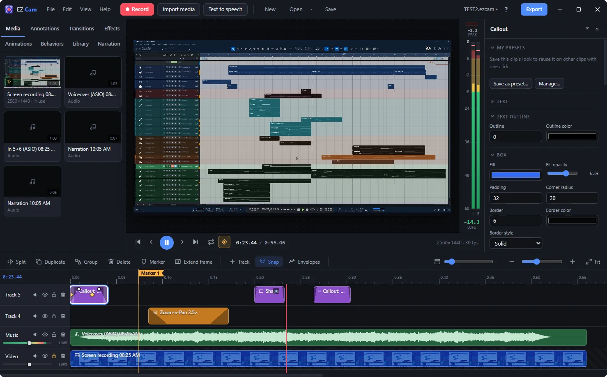

Record it. Edit it. Share it.
EZ Cam is a screen recorder and video editor for Windows. Record your screen, camera and voice, polish it on a timeline, and upload it straight to your YouTube channel.

Screen, camera & sound
Record a screen, a window or a region, with your webcam, microphones, system sound and ASIO interfaces, each on its own track.
Timeline editing
Cut, trim, split, group and ripple-edit across tracks, with markers that become YouTube chapters.
Callouts & keystrokes
Titles, callouts, arrows, spotlights and blur, plus keystroke callouts made automatically from your recording.
Animations & transitions
Keyframe animations, ready-made behaviors, and transitions between clips such as cross-dissolve, push and wipe.
Clean audio
Noise removal, voice EQ and compressor, loudness normalizing and automatic ducking of music under your voice.
Export & upload
Fast MP4, WebM and GIF export, and direct upload to your own YouTube channel.